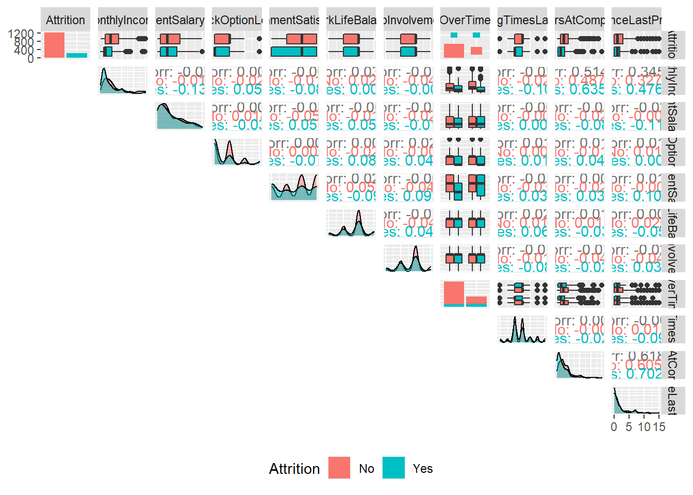

library(tidyverse)
library(GGally)employee_attrition_tbl <- read_csv("Attrition.txt")## Rows: 1470 Columns: 35
## ── Column specification ────────────────────────────────────────────────────────
## Delimiter: ","
## chr (9): Attrition, BusinessTravel, Department, EducationField, Gender, Job...
## dbl (26): Age, DailyRate, DistanceFromHome, Education, EmployeeCount, Employ...
##
## ℹ Use `spec()` to retrieve the full column specification for this data.
## ℹ Specify the column types or set `show_col_types = FALSE` to quiet this message.employee_attrition_tbl %>%
glimpse()## Rows: 1,470
## Columns: 35
## $ Age <dbl> 41, 49, 37, 33, 27, 32, 59, 30, 38, 36, 35, 2…
## $ Attrition <chr> "Yes", "No", "Yes", "No", "No", "No", "No", "…
## $ BusinessTravel <chr> "Travel_Rarely", "Travel_Frequently", "Travel…
## $ DailyRate <dbl> 1102, 279, 1373, 1392, 591, 1005, 1324, 1358,…
## $ Department <chr> "Sales", "Research & Development", "Research …
## $ DistanceFromHome <dbl> 1, 8, 2, 3, 2, 2, 3, 24, 23, 27, 16, 15, 26, …
## $ Education <dbl> 2, 1, 2, 4, 1, 2, 3, 1, 3, 3, 3, 2, 1, 2, 3, …
## $ EducationField <chr> "Life Sciences", "Life Sciences", "Other", "L…
## $ EmployeeCount <dbl> 1, 1, 1, 1, 1, 1, 1, 1, 1, 1, 1, 1, 1, 1, 1, …
## $ EmployeeNumber <dbl> 1, 2, 4, 5, 7, 8, 10, 11, 12, 13, 14, 15, 16,…
## $ EnvironmentSatisfaction <dbl> 2, 3, 4, 4, 1, 4, 3, 4, 4, 3, 1, 4, 1, 2, 3, …
## $ Gender <chr> "Female", "Male", "Male", "Female", "Male", "…
## $ HourlyRate <dbl> 94, 61, 92, 56, 40, 79, 81, 67, 44, 94, 84, 4…
## $ JobInvolvement <dbl> 3, 2, 2, 3, 3, 3, 4, 3, 2, 3, 4, 2, 3, 3, 2, …
## $ JobLevel <dbl> 2, 2, 1, 1, 1, 1, 1, 1, 3, 2, 1, 2, 1, 1, 1, …
## $ JobRole <chr> "Sales Executive", "Research Scientist", "Lab…
## $ JobSatisfaction <dbl> 4, 2, 3, 3, 2, 4, 1, 3, 3, 3, 2, 3, 3, 4, 3, …
## $ MaritalStatus <chr> "Single", "Married", "Single", "Married", "Ma…
## $ MonthlyIncome <dbl> 5993, 5130, 2090, 2909, 3468, 3068, 2670, 269…
## $ MonthlyRate <dbl> 19479, 24907, 2396, 23159, 16632, 11864, 9964…
## $ NumCompaniesWorked <dbl> 8, 1, 6, 1, 9, 0, 4, 1, 0, 6, 0, 0, 1, 0, 5, …
## $ Over18 <chr> "Y", "Y", "Y", "Y", "Y", "Y", "Y", "Y", "Y", …
## $ OverTime <chr> "Yes", "No", "Yes", "Yes", "No", "No", "Yes",…
## $ PercentSalaryHike <dbl> 11, 23, 15, 11, 12, 13, 20, 22, 21, 13, 13, 1…
## $ PerformanceRating <dbl> 3, 4, 3, 3, 3, 3, 4, 4, 4, 3, 3, 3, 3, 3, 3, …
## $ RelationshipSatisfaction <dbl> 1, 4, 2, 3, 4, 3, 1, 2, 2, 2, 3, 4, 4, 3, 2, …
## $ StandardHours <dbl> 80, 80, 80, 80, 80, 80, 80, 80, 80, 80, 80, 8…
## $ StockOptionLevel <dbl> 0, 1, 0, 0, 1, 0, 3, 1, 0, 2, 1, 0, 1, 1, 0, …
## $ TotalWorkingYears <dbl> 8, 10, 7, 8, 6, 8, 12, 1, 10, 17, 6, 10, 5, 3…
## $ TrainingTimesLastYear <dbl> 0, 3, 3, 3, 3, 2, 3, 2, 2, 3, 5, 3, 1, 2, 4, …
## $ WorkLifeBalance <dbl> 1, 3, 3, 3, 3, 2, 2, 3, 3, 2, 3, 3, 2, 3, 3, …
## $ YearsAtCompany <dbl> 6, 10, 0, 8, 2, 7, 1, 1, 9, 7, 5, 9, 5, 2, 4,…
## $ YearsInCurrentRole <dbl> 4, 7, 0, 7, 2, 7, 0, 0, 7, 7, 4, 5, 2, 2, 2, …
## $ YearsSinceLastPromotion <dbl> 0, 1, 0, 3, 2, 3, 0, 0, 1, 7, 0, 0, 4, 1, 0, …
## $ YearsWithCurrManager <dbl> 5, 7, 0, 0, 2, 6, 0, 0, 8, 7, 3, 8, 3, 2, 3, …plot_ggpairs <- function(data, color = NULL, density_alpha = 0.5) {
color_expr <- enquo(color)
if (rlang::quo_is_null(color_expr)) {
g <- data %>%
ggpairs(lower = "blank")
} else {
color_name <- quo_name(color_expr)
g <- data %>%
ggpairs(mapping = aes_string(color = color_name),
lower = "blank", legend = 1,
diag = list(continuous = wrap("densityDiag",
alpha = density_alpha))) +
theme(legend.position = "bottom")
}
return(g)
}plot <- employee_attrition_tbl %>%
select(Attrition, MonthlyIncome, PercentSalaryHike, StockOptionLevel, EnvironmentSatisfaction, WorkLifeBalance, JobInvolvement, OverTime, TrainingTimesLastYear, YearsAtCompany, YearsSinceLastPromotion) %>%
plot_ggpairs(color = Attrition)
ggsave("asd.png",plot, width = 15, height = 15)
plot IMPORTANT: You can delete everything in here and start fresh. You might want to start by not deleting anything above this line until you know what that stuff is doing.
Work-Life Features What can you deduce about the interaction between Over Time and Attrition? a The proportion of those leaving that are working Over Time are high compared to those that are not leaving
Training and Education What can you deduce about the interaction between Training Times Last Year and Attrition c It’s difficult to deduce anything based on the visualization
Time-Based Features What can you deduce about the interaction between Years At Company and Attrition b People that leave tend to have less working years at the company
Time-Based Features What can you deduce about the interaction between Years Since Last Promotion and Attrition?